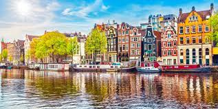
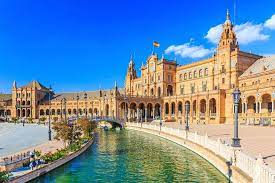
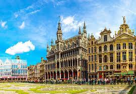

netherland
The Netherlands, also known as Holland, is a captivating country located in Northwestern Europe. It is characterized by its picturesque landscapes, including flat plains, charming canals, and iconic windmills. The country is renowned for its progressive social policies, embracing concepts such as tolerance and equality. Amsterdam, the capital city, is famous for its beautiful canals, historic architecture, and vibrant cultural scene. The Netherlands has a rich artistic heritage, with influential painters like Rembrandt and Van Gogh hailing from this land.
spain
Spain, located in southwestern Europe, is a country that offers a tapestry of diverse experiences. It boasts a stunning Mediterranean coastline, dotted with breathtaking beaches and vibrant coastal cities. Spain is known for its rich history, influenced by periods of Roman rule, Moorish occupation, and a notable colonial era. Cities such as Barcelona, Madrid, Valencia, and Seville captivate visitors with their unique character, architectural marvels, and lively festivals. Spanish culture is renowned for its culinary delights, including paella and tapas, as well as passionate flamenco dance.
belgium
Belgium, a small yet captivating country in Western Europe, offers a delightful blend of history, culture, and culinary delights. It is known for its medieval towns, enchanting architecture, and artistic heritage. Belgium comprises three main regions: Flanders in the north, where Dutch is predominantly spoken; Wallonia in the south, where French is the primary language; and the Brussels-Capital Region, which is bilingual. The country is famous for its world-class chocolates, delicious waffles, and an impressive variety of renowned beers.